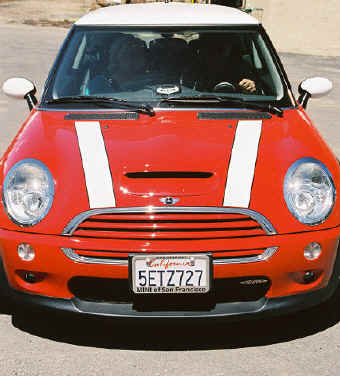
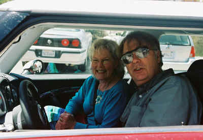

Viaggio
Let's Motor
|
|
Viaggio |
This space reserved for something radical about motoring
|
 May 8, 2004, we get to see Ralph's new Mini |
 Vicki on a demonstration ride - Ralph, did you let her drive? When I met Vicki, there are two things that I learned quickly. No matter where we are on the planet, she makes friends with cats. When driving anywhere, she is completely alert and announces "There's a Mini!" at every opportunity. This may subside now that, thanks to BMW and a beautiful marketing approach, Minis are showing up everywhere and at all times on highways and side streets in the United States. Ralph and Vicki owned a (classic?) Mini years ago, and he has one again. He agrees that they are larger now, with more oomph. |
|
|
You are navigating Orcmid's Lair |
created 2004-05-19-14:20 -0700 (pdt) by orcmid |